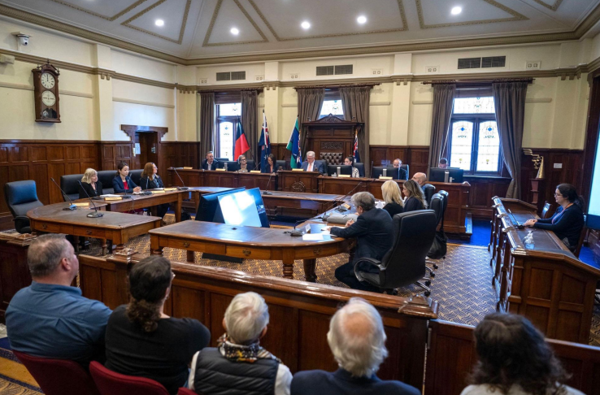
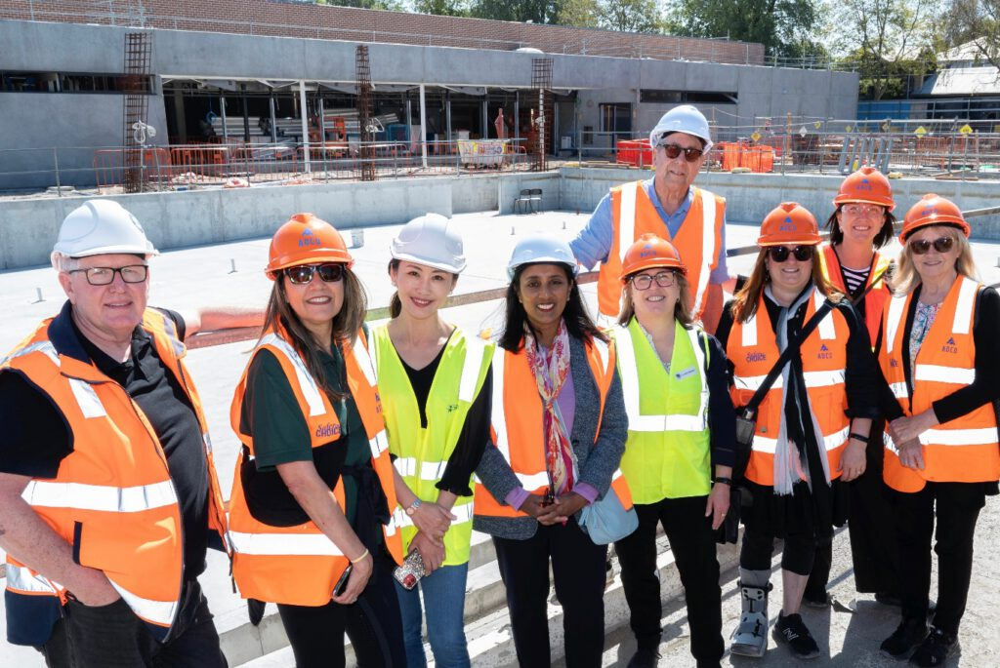
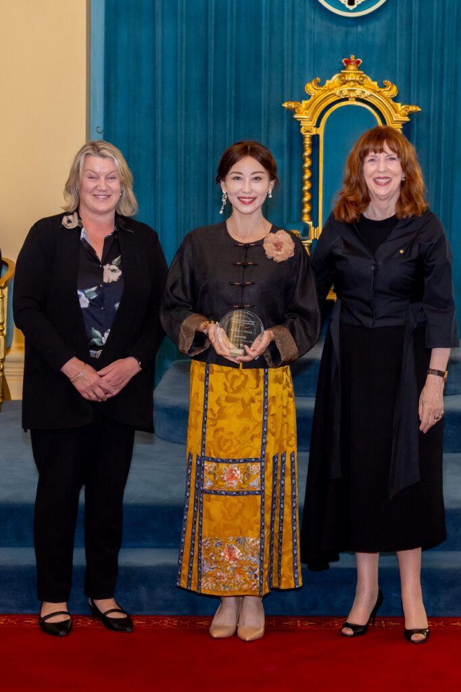

4月15日晚，墨尔本中国高校校友会联盟（MCUAA）成功举办了一场以新移民在多元文化社会中参与公共事务为主题的线上讲座，邀请到维多利亚州Glen Eira 市议员兼副市长张俪女士（Cr Annisa Li Zhang）担任主讲嘉宾。本次讲座以《十年：从不会英语的全职妈妈到市议员——新移民在多元文化社会中的公共事务参与》为题，吸引了众多校友参与，反响热烈。本次讲座不仅是一段个人奋斗历程的分享，更系统性地介绍了澳大利亚的政治体系、本地政府运作机制，以及新移民如何逐步参与公共事务、实现社会影响力的路径。

开场引介: 一位深耕多元文化与公共事务的领导者
讲座伊始，MCUAA主席范志良博士简要介绍了主讲嘉宾。张俪副市长拥有南京大学日语学士学位及墨尔本大学工商管理硕士学位,精通中、英、日三语，在商业咨询、社区事务与公共治理领域拥有二十余年经验。目前，张副市长担任维多利亚州 Glen Eira 市议会市议员及副市长。自2020年当选以来，她致力于提升本地公共服务质量、社区安全、绿地空间、体育设施以及支持本地商业发展。她曾主持多个咨询委员会，包括艺术与文化、社区资助以及多元文化事务等领域。张副市长同时担任维多利亚州地方政府协会（Municipal Association of Victoria）内城区东南区域董事，参与推动行业层面的协作与治理发展。
基于自身经历以及推动新一代领导者发展的使命，张副市长创立了亚洲领导力基金会（Asian Leadership Foundation）。该非营利组织致力于为亚裔澳大利亚人提供必要的知识、技能、人脉与信心，促进亚裔澳大利亚人在政治、政府及公共部门中的领导力发展与代表性提升。她也是墨尔本龙足球俱乐部（Melbourne Loong Football Club）的创始人，该俱乐部是首个华人澳大利亚社区的澳式足球俱乐部，参加AFL九人制比赛。该项目体现了她通过体育促进社区参与与跨文化交流的理念。作为一名作者，张俪副市长通过写作反思跨文化经历、身份认同以及当代社会变迁。她的中文著作《Inside the Town Hall》于2024年在澳大利亚出版，基于她作为首位当选Glen Eira 市议会的华裔澳大利亚女性的经历撰写。鉴于她对多元文化社区的贡献，张副市长于2024年荣获维多利亚州多元文化卓越奖，并入选维州多元文化荣誉名人录。
十年蜕变：一段真实而鼓舞人心的个人旅程
张俪副市长以自身经历开启了她的分享。她出生于中国，曾在日本生活，并于2010年移居澳大利亚。初到澳洲时，32岁的她是一名全职母亲，英语基础有限。与许多新移民一样，她需要面对语言障碍、文化差异以及社会融入等多重挑战。然而，在随后的十余年间，她的人生轨迹发生了深刻转变。通过持续学习与自我提升，她完成了墨尔本大学工商管理硕士学位；通过积极参与社区志愿服务，她逐步建立起广泛的人脉网络，并加深了对澳大利亚社会运行方式的理解。最终，于2020年成功当选市议员，并出任副市长。
她用一句话概括这段历程：“It’s never too late（永远不晚）。”这句朴素而有力的话语，引发了听众的强烈共鸣，也在无形中打破了人们对年龄、背景与机遇之间关系的固有认知。
在分享过程中，张副市长还展现了其多维度的身份认同。她不仅是一位民选官员，同时也是第一代移民、一位母亲、中日英三语者，以及活跃于贸易与咨询领域的从业者；她亦是作家与文学爱好者、社区志愿者，以及女性主义者与多元文化的积极倡导者。这种多重身份的融合，生动体现了当代移民群体的复杂性与独特价值。她鼓励在场听众，不应被单一标签所定义，而应主动拥抱自身的多样性，将多元背景转化为前行的动力与优势。
市政（Council）：离社区最近的政府
讲座的重要组成部分之一，是对澳大利亚政治体系的系统讲解。张副市长介绍了澳大利亚的三级政府结构：联邦政府（Federal）：负责国防、外交、移民、税收、社会保障、以及全国性的法律与经济政策等国家层面的事务;州政府（State）：负责教育、公共医疗与医院、警察与司法系统、道路与公共交通管理、住房政策以及地方经济发展等公共服务;地方政府（Local/Council）：负责社区层面的基础设施与公共服务。她还简要介绍了源自英国的威斯敏斯特体系，以及联邦与州议会中的上下议院制度。张副市长特别强调，地方政府是最贴近民众、也是最容易参与的层级。以Glen Eira市议会为例，她介绍了市政在社区中的具体职能，包括：
- 图书馆与社区中心服务
- 城市规划与基础设施建设
- 公共卫生与安全管理
- 文化与休闲活动组织
她指出，市政并非遥不可及的机构，而是与居民日常生活息息相关的重要组成部分。更重要的是，市政高度重视公众参与，居民可以通过多种渠道直接影响政策与决策。

如何参与公共事务：从日常行动开始
在讲座中，张副市长提供了一份非常实用的“参与指南”，为有意参与公共事务的听众指明了具体路径，包括：
- 关注市政官网及社交媒体
- 订阅市政新闻通讯（newsletter）
- 使用图书馆、社区中心等公共资源
- 参与社区活动（节日、讲座、工作坊等）
- 填写政府或市政调查问卷
- 向市议员或政府代表发送邮件
- 参加社区咨询（如规划、交通等议题）
- 旁听市议会会议（线上或线下）
- 在公开会议中提问
- 申请加入咨询委员会或顾问小组
- 参与志愿服务
- 加入社区组织或社会团体
- 参与孩子学校的家长委员会
- 组织或参与社区活动
- 关注选举信息并积极投票
- 与候选人交流或参与竞选活动
- 在工作场所积极参与公共事务
这份清单清晰地表明，公共参与并非高不可攀，而是可以从日常生活中的点滴行动开始。

多元文化参与的重要性
讲座的核心议题之一，是多元文化背景群体在公共事务中的参与与代表性。张副市长指出，当前澳大利亚公共领域中，亚裔群体的代表性仍然不足。华人移民群体在经济与专业领域往往表现优异，但在公共政策制定层面的代表性却长期不足。这种缺失可能导致政策制定无法充分反映多元社区的需求。
她强调，新移民参与公共事务具有重要意义：
- 让社区声音被听见
- 推动更具包容性的政策制定
- 提供多元视角与创新思维
- 增强社会凝聚力
讲座中令人印象深刻的一句话是：“你不需要被允许，才能参与。” 这句话直击许多新移民的心理障碍——认为自己尚未准备好、不够资格或缺乏资源。张副市长呼吁新移民不要仅仅局限于自己的“小圈子”，而是要勇敢地站出来参与公共事务。她鼓励大家主动迈出第一步，因为参与本身就是学习与成长的过程。只有通过实践，才能逐步建立信心与能力。她还介绍了她创立亚裔领导力基金会(https://www.asianleadershipfoundation.org.au/)等组织在推动亚裔群体公共参与方面所做的努力。
打破“竹天花板”
“竹天花板”（Bamboo Ceiling）是讲座中的一个重要概念，指的是亚裔群体在职业发展与领导层晋升过程中面临的隐性障碍。张副市长坦诚地指出，这些障碍确实存在，例如文化刻板印象、语言挑战以及社会网络不足等。但她同时强调，这些障碍并非无法突破。
她提出了一系列切实可行的建议：
- 心怀大爱：关注比自身更宏大的议题
- 增强心理韧性：不轻易被批评所影响
- 明确使命感：找到人生的意义与方向
- 勇于发声：不要等到完全准备好才行动
- 先行动再清晰：行动本身会带来方向
- 持续坚持：小行动的长期积累至关重要
- 保持好奇心：不断学习与提问
- 主动参与：即使不适也要走出去
- 建立支持网络：找到志同道合的人
- 勇敢而非完美：追求进步而不是完美
这些建议不仅适用于政治参与，也对个人职业发展具有普遍意义。

互动问答：真实而坦诚的交流
随后，讲座在 MCUAA 理事、天津大学墨尔本校友会刘莘会长的主持下转入互动环节。面对校友们的热情提问，张俪副市长逐一给予了详尽而真诚的回馈，现场讨论氛围极为活跃。活动尾声，刘莘会长代表高校联盟向张俪副市长表达了诚挚谢意，并表示本次讲座不仅是一场精彩的个人成长故事的分享，更是一堂关于公民意识与社会参与的生动课程, 为在场听众带来了启发与勇气。
MCUAA 亦希望通过此次分享，进一步推动广大校友在澳大利亚公共事务中的积极参与。正如澳大利亚外交部长黄英贤(Penny Wong)所言：”We need more Chinese Australians in public life”。
MCUAA将秉持初心，持续深耕校友服务，通过策划涵盖前沿科技、教育发展、职业规划、人文素养及健康生活等多元主题的系列讲座，致力于打造一个更具深度与广度的终身学习与跨界交流平台，与广大校友携手同行、共同成长。